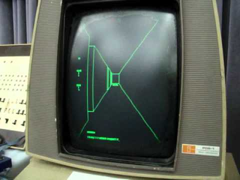
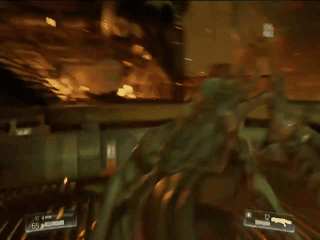

The first FPS game has been traced back to 1973, to a game called "Maze War". The gameplay is fairly simple: Players wander around a maze, being capable of moving backward or forwards, turning right or left in 90-degree increments, and peeking around corners through doorways. The game also uses simple tile-based movement, where the player moves from square to square. Other players are seen as their names or figures. Players gain points for shooting other players, and lose them for being shot.
Doom (1993) was the spearhead for showing how the FPS genre could be used to show gore, allowing the genre to evlove into the one it is today. it pioneered immersive 3D graphics, networked multiplayer gaming, and support for customized additions and modifications. It focuses on rather than sitting, taking cover and taking it slow, you run straight into the thick of it and destroy everything. With the reboot of Doom in 2016, it returns to the open ended levels, as well as the enviroment traversal, character upgrades, and the ability to perform executions.
